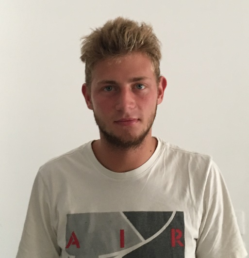

matteozara98@gmail.com
(+39) 3427579100
Stuttgart, Germany
I'm a first-year PhD student at the International Max Planck Research School for Intelligent Systems (IMPRS-IS) and the University of Stuttgart. My research focuses on human-AI collaboration, particularly in the area of Theory of Mind (ToM). I investigate methods for improving ToM reasoning in AI systems, with the goal of aligning them more closely with human cognitive processes and enabling more effective and natural interactions between humans and AI.
Prior to starting my PhD, I earned a Master's degree in Artificial Intelligence and Robotics from Sapienza University of Rome, graduating with highest honors (110/110 cum laude) in July 2024.
Beyond academia, I founded BrAIn, a startup dedicated to transforming the museum experience through AI and augmented reality, making cultural engagement more interactive and immersive.
I'm a positive and curious person who loves tackling challenging AI problems.
Feel free to reach out if you'd like to collaborate!
PhD scholar
International Max Planck Research School for Intelligent Systems, Stuttgart, Germany Present
PhD student in Artificial Intelligence and Human-Computer Interaction
University of Stuttgart, Stuttgart, Germany Present
Master in Artificial Intelligence and Robotics
Sapienza University of Rome, Rome, Italy July 2024
Bachelor in Computer Engineering
University of Padova, Padova, Italy July 2021
High school diploma in ICT and Economics
ITC PF Calvi, Padova, Italy July 2017
Researcher
Collaborative Artificial Intelligence (CAI), Stuttgart, Germany Nov 2025 to present
Founder
BrAIn, Padova, Italy Nov 2024 to present
Fractional CTO for multiple early-stage startups
Madrid, Spain Jun 2025 to Nov 2025
Founder in Residence
Vento Venture, Turin, Italy Jan 2025 to May 2025
AI Researcher
Vodafone, Rome, Italy Mar 2024 to Oct 2024
AI Junior Researcher
Florida Atlantic University (FAU), Boca Raton, FL, USA Sep 2023 to Feb 2024
Computer Vision Junior Researcher
Sapienza University of Rome, Rome, Italy Jan 2023 to Jul 2023
Software Engineer (full stack developer)
Atroos srl, Padova, Italy Jul 2020 to Oct 2020
Waiter and barman
Spiller, Padova, Italy Sep 2017 to Apr 2022
"Enhancing Manatee Aggregation Counting through Augmentation and Cross-Domain Learning"
IEEE Access, 2024 (link here)
"Why Don't You Speak?: A Smartphone Application to Engage Museum Visitors Through Deepfakes Creation"
SUMAC, ACMMM 2023, Ottawa, CA (link here)
State Exam for Engineering License
Rome, Italy Sep 2025
Honors Master degree
Sapienza University of Rome, Rome, Italy Jul 2024
Best Paper Award
SUMAC Workshop at ACM MM 2023, Ottawa, Canada Nov 2023
Google Generative AI course
Google, Online Jun 2023 to Jul 2023
CyberChallenge IT
Sapienza University of Rome, Italy Feb 2023 to Jun 2023
Helper for international students (buddy)
Sapienza University of Rome, Rome, Italy Sep 2022 to Jun 2023
Italian and English